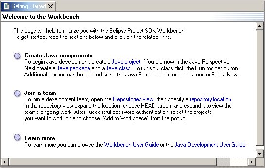

The welcome page is used to greet the workbench user with pointers to common tasks.

When configuring the platform for a particular product configuration, you can define a custom welcome page by including a welcomePage attribute in the product.ini file in the install/configurations/ subdirectory.
welcomePage = welcome.xml
The value of the welcomePage attribute is an xml file defining the welcome page.
The file has the following format:
<welcomePage> tag with
The intro and item tags can contain the following
pluginId (the id of the plug-in containing the action)
class (the qualified name of the action class to instantiate and run)
id (the id of the infoset to show in the help viewer)
href (optional - a valid help topic URL
contained in the specified infoSet and having the following
format:
/pluginID/path_to_document)
Note that text between the start and end tags for actions and help topics will appear as a highlighted link.
Example welcome page:
<?xml version="1.0" encoding="UTF-8" ?>
<welcomePage
title="Welcome to the Workbench">
<intro>This page will help familiarize you with the Eclipse Project SDK Workbench.
To get started, read the sections below and click on the related links. </intro>
<item><b>Create Java components </b>
To begin Java development, create a <action pluginId="org.eclipse.jdt.ui" class="org.eclipse.jdt.internal.ui.wizards.OpenProjectWizardAction">Java project</action>. You are now in the Java Perspective.
Next create a <action pluginId="org.eclipse.jdt.ui" class="org.eclipse.jdt.internal.ui.wizards.OpenPackageWizardAction">Java package</action> and a <action pluginId="org.eclipse.jdt.ui" class="org.eclipse.jdt.internal.ui.wizards.OpenClassWizardAction">Java class</action>. To run your class click the Run toolbar button.
Additional classes can be created using the Java Perspective's toolbar buttons or File -> New. </item>
<item><b>Join a team </b>
To join a development team, open the <action pluginId="org.eclipse.vcm.ui" class="org.eclipse.vcm.internal.ui.actions.OpenRepositoriesViewAction">Repositories view </action> then specify a <action pluginId="org.eclipse.vcm.ui.cvs" class="org.eclipse.vcm.internal.ui.ccvs.NewRepositoryConnectionAction">repository location</action>.
In the repository view expand the location, choose HEAD stream and expand it to view the
team's ongoing work. After successful password authentication select the projects
you want to work on and choose "Add to Workspace" from the popup. </item>
<item><b>Learn more </b>
To learn more you can browse the <topic id="org.eclipse.platform.doc.user.infoset_Guide"
href="/org.eclipse.platform.doc.user/gettingStarted/qs-1.htm">Workbench User Guide
- Basic Tutorial</topic> or the <topic id="org.eclipse.jdt.doc.user.infoset_Guide">Java Development User Guide</topic>.</item>
</welcomePage>